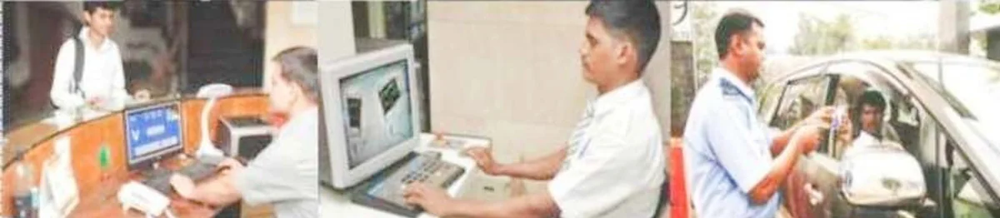

A stronger line
of protection.
From manned guarding and mobile patrols to surveillance and security audits — solutions shaped around each site.

Safeguard people, places and assets.
KRSS delivers trained, motivated and disciplined security personnel for corporate houses, commercial complexes and other protected premises.
Site-specific guard deployment is supported by observation, assessment, reporting, monitoring and supervisory audits.
Discuss Your Security Needs ↗Our protective capabilities
Integrated manpower, process and technology for site security.
◈ Manned Guarding
Deployment of trained and supervised guards according to the property’s needs.
◈ Security Audits
Regular property audits with observations and recommendations.
◈ Mobile Patrolling
Scheduled and surprise checks by officers and supervisory teams.
◈ Electronic Security
CCTV, baggage scanners, DFMD, HHMD and trained system operators.
◈ Site & Access Control
Patrolling procedures, access checks, incident reporting and risk awareness.
◈ Emergency Response
Evacuation, first aid, rescue, fire incidents and coordination with authorities.

Prepared for the site. Ready for the situation.
According to KRSS company materials, guard training includes classroom instruction followed by 72 hours of on-the-job training, with daily readiness exercises and periodic checks.
- Site topography and patrolling procedures
- Observation, assessment and reporting
- Emergency routes and fire protection awareness
- Night checks and management supervision
Audits, patrolling and vigilant monitoring.
Professional security audits are carried out at properties, followed by recommendations to strengthen safeguards.
Officers conduct scheduled and surprise night checks, while branch heads visit sites and area officers report requirements to head office.
- Regular site security audits
- Surprise and scheduled night rounds
- Branch supervision and actionable reporting


Electronic systems supported by trained operators.
KRSS describes round-the-clock vigilance and trained operators working alongside installed security equipment.